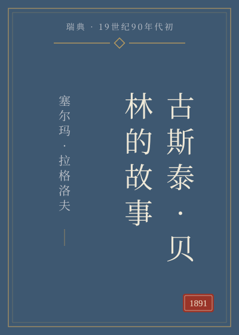
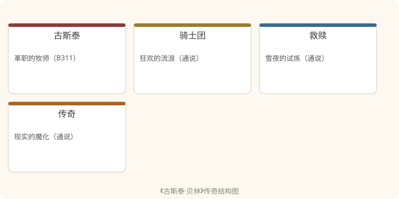

古斯泰·贝林的故事
一、基本信息
| 作者 | 塞尔玛·拉格洛夫 |
|---|---|
| 成书/出版 | 1891年（作者页注记：Britannica B311——Gösta Berlings saga——年份通说待核） Selma Lagerlof — Encyclopaedia Britannica（百科全书） |
| 国别/地区 | 瑞典 |
| 时代 | 近代 · 19世纪90年代初 |
| 体裁 | 长篇小说 |
| 语言 | 瑞典语 |

《古斯泰·贝林》传奇结构图（主题·结构图）
二、创作背景
作者页（B311）注记：Gösta Berlings saga——拉格洛夫代表作之一（骑鹅旅行记作者）。
Britannica（B311）：拉格洛夫——1909诺奖（首位女作家得主说待核——B311 口径）。
题材（通说待核）：被革职的牧师古斯泰与'恶魔的骑士团'——瑞典庄园传奇。
三、内容脉络
（通说待核）牧师古斯泰被革职后加入农庄的狂欢骑士团。
（通说待核）辛克莱夫人的救赎与雪夜试炼。
四、主要人物表
| 人物 | 身份 | 说明 |
|---|---|---|
| 古斯泰·贝林 | 革职牧师 | （B311 书名人物） |
| 玛格丽特·辛克莱 | 农庄女主人 | （通说待核） |
五、主题与艺术特点
- 传奇与现实的交织（通说待核）。
- '恶魔骑士团'的狂欢（通说待核）。
- 瑞典庄圆的浪漫主义（B311 语境）。
六、影响与评论
- Britannica：拉格洛夫1909诺奖（B311 作者页语境）。
Selma Lagerlof — Encyclopaedia Britannica（百科全书） - Britannica：《骑鹅旅行记》为代表作（B311 交叉）。
Selma Lagerlof — Encyclopaedia Britannica（百科全书）
七、阅读建议
难点
- 瑞典浪漫主义传统。
- 传奇化的人物群像。
- 《古斯泰·贝林的故事》中译名（《古斯泰·贝林传奇》）待核。
- 瑞典文原版（公有领域）。
拉格洛夫成名作；先于《骑鹅旅行记》。
八、待核实
- 1891年出版细节待核。
- 人物名（古斯泰/辛克莱）核对（通说）。
- '恶魔骑士团'细节待核。